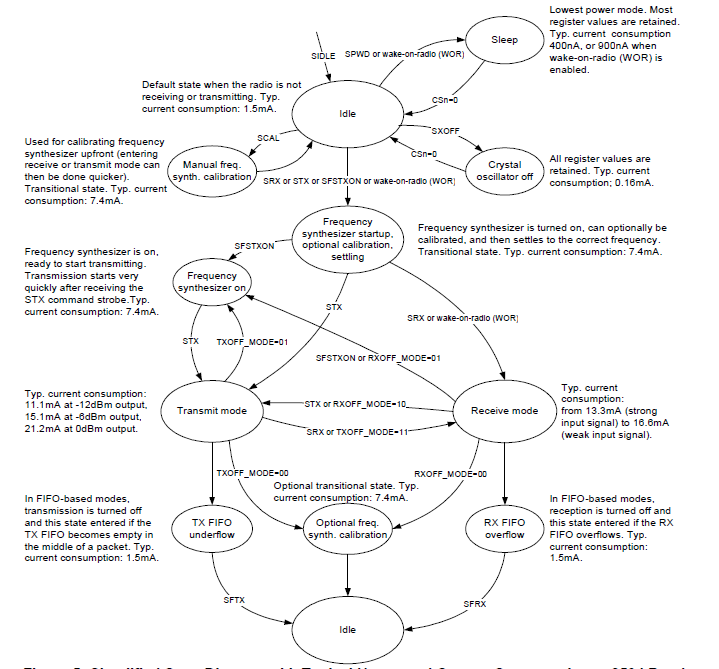
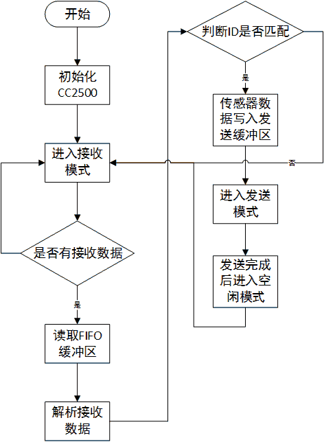
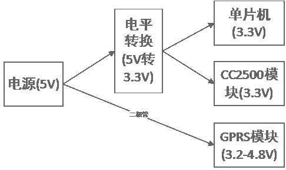

拖来拖去就拖到现在了，什么都没弄，趁现在临阵抱一下佛脚吧。
1. CC2500模块
用的是现成淘宝买的模块，从它的芯片手册中知道
CC2500是一种低成本的2.4GHz收发器，集成了一个数据传输率可达500kbps的高度可配置的调制解调器，并为数据包处理、数据缓冲、突发数据传输、清晰信道评估、连接质量指示和电磁波激发提供广泛的硬件支持。
虽然芯片手册说的好像很厉害的样子，但对我来说完全没感觉，手册后面各种专业术语也根本就是对牛弹琴，对我有用的我想就是这幅图了

上图描述了CC2500工作状态的转换过程，由此编写CC2500的驱动代码。具体的参考CC2500使用手记
普通节点的CC2500工作流程如下图

另外，CC2500的工作电压为3.3V，与5V单片机电平不匹配，所以要么换成3.3V的单片机，要么加稳压模块将5V转换成3.3V。
2. GPRS模块
GPRS模块现在还没有仔细看，测试过直接和电脑通过串口发送AT指令控制GPRS模块，现在主要的问题是GPRS芯片的工作电压为4V（3.2-4.8）左右，而且需要有2A以上的电流供电能力。
####3. 电平适配
单片机的选择主要考虑它和外围模块的电平匹配，CC2500模块的工作电压为3.3V，GPRS模块的工作电压为3.2-4.8V，大致的如下图

4. 数据库的设计
| 列名 | 描述 | 数据类型 | 允许空值 | 说明 |
|---|---|---|---|---|
| sensor_ID | 节点ID | uniqueidentifier | NO | 主键 |
| PH | ph值 | nvarchar(256) | NO | - |
| temperature | 温度 | nvarchar(256) | NO | - |
| dissolved_oxygen | 溶解氧 | nvarchar(256) | NO | - |
| update_time | 更新时间 | datetime | NO | - |
上表只是关于节点数据存放的表，一个数据采集节点某一时刻的数据作为一条记录，通过汇聚的GPRS模块发送至服务器，然后由socket程序负责接收处理数据并存入数据库。